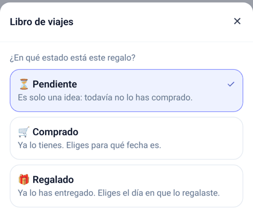
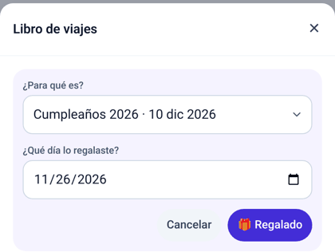
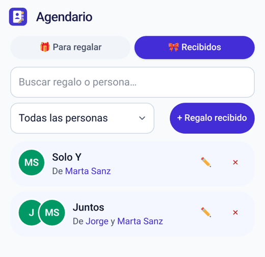
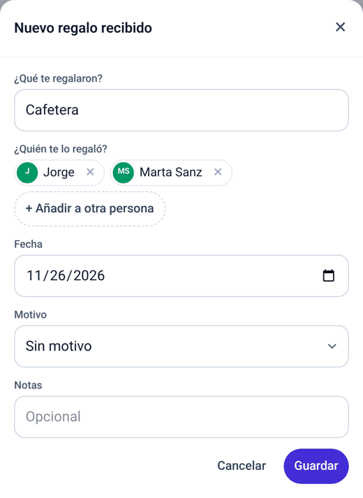
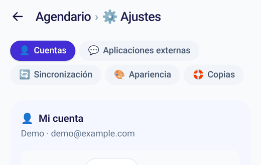
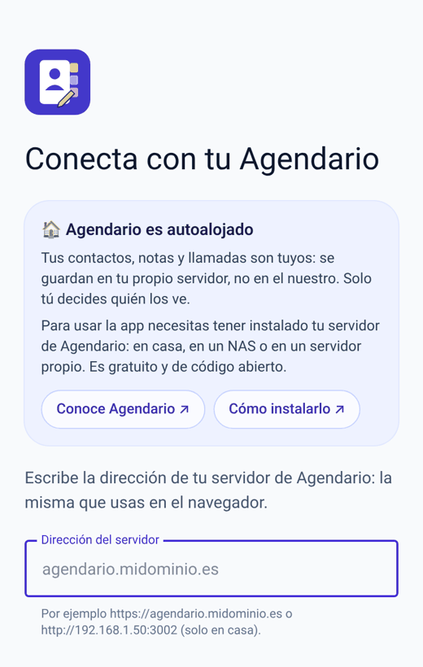

12Novedades de la versión 1.3.2
La 1.3.2 pone orden en los regalos (estado de cada idea y lista de los que te regalan), reorganiza Ajustes y el menú, y deja la app lista para la revisión de Google Play.
Estado de cada idea de regalo
Cada idea lleva un botón con su estado: ⏳ Pendiente, 🛒 Comprado o 🎁 Regalado. Está en la ficha del contacto y en la pestaña Regalos → Para regalar. Al tocarlo eliges el estado:
- Pendiente: es solo una idea (se olvida la fecha y el evento).
- Comprado: eliges para qué fecha es (su cumpleaños, Navidad, Reyes u otra fecha).
- Regalado: además del evento, Agendario pregunta qué día lo regalaste. Propone la fecha del evento si ya pasó o, si no, la de hoy. El calendario de Fechas sigue marcando ese evento como regalado aunque lo entregaras otro día.

Al tocar el estado.

Regalado: evento y día en que lo regalaste.
Regalos recibidos, de una o varias personas
- La opción Regalos tiene dos pestañas: 🎁 Para regalar (lo de siempre) y 🎀 Recibidos, con todos los regalos que te han hecho, del más reciente al más antiguo, un buscador y un filtro por persona.
- Con «+ Regalo recibido» apuntas qué es, la fecha, el motivo, notas y quién te lo regaló: uno o varios contactos («de mis padres», «de los compañeros»).
- Sale en la ficha de cada uno de los que lo regalaron, con los demás nombres («con Ana y Pedro»), y se puede editar con ✏️.
- Los regalos recibidos que ya tenías se conservan. Si combinas duplicados, pasan al contacto que se queda; si borras a una persona, el regalo sigue con las demás.

Regalos → Recibidos.

Un regalo de dos personas.
Ajustes y menú
- Todoist y Gmail están ahora en Ajustes → Aplicaciones externas, con su logo. En Sincronización quedan Fastmail/CardDAV, el servidor CardDAV, el calendario e importar/exportar .vcf.
- Las pestañas de Ajustes bajan a una segunda fila en el móvil, para que se vean todas.
- Manual (PDF) y Changelog son ahora dos botones dentro de Acerca de Agendario.
- En la app, 📞 Registro de llamadas tiene su propia opción en el menú de usuario (en la web no aparece).
- En la app, las páginas del menú de usuario ponen el título en una sola línea: «← Agendario › Ajustes». Tocando «Agendario» vuelves al menú; con «atrás», a la página en la que estabas.
- Para añadir otra cuenta de Google desde la app, el aviso de Gmail tiene un botón que abre esa página en el navegador.

El título en una línea y las pestañas en dos filas.
Cambiar de servidor, con Cancelar
«🔁 Cambiar de servidor» ya no cierra la sesión al entrar: la pantalla viene con el servidor actual escrito y un botón Cancelar que te devuelve sin tocar nada. Solo al pulsar Continuar y comprobar que el nuevo servidor responde se cierra la sesión del anterior.
Aviso de «autoalojado» en la app
La primera pantalla de la app explica que Agendario es autoalojado: tus datos se guardan en tu propio servidor y para usar la app hay que instalar uno. Tiene dos botones, «Conoce Agendario» y «Cómo instalarlo», que abren dagarin.es/agendario. Si el móvil está en inglés, el aviso sale en inglés. En la pantalla de inicio de sesión va un aviso más corto con los mismos enlaces.

La primera pantalla de la app.